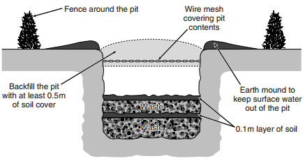

Pembelajaran 3 - Penanganan limbah dan dinamika komunitas
Penanganan limbah adalah proses pengelolaan dan pengurangan limbah agar tidak membahayakan lingkungan dan kesehatan manusia. Limbah dapat berupa bahan padat, cair, atau gas yang dihasilkan dari berbagai aktivitas manusia, termasuk industri, rumah tangga, pertanian, dan sektor lainnya.
A. Penanganan limbah padat
Limbah padat adalah jenis limbah yang berbentuk padat atau semi-padat. Limbah padat dapat berasal dari berbagai sumber, termasuk rumah tangga, industri, komersial, dan institusi. Contoh limbah padat meliputi sampah domestik, limbah konstruksi, limbah medis, limbah elektronik, dan banyak lagi.
- Reduce: Pengurangan karbon dioksida dengan mengurangi sumber daya kita seperti energi, air, dan limbah
- Recover: Pemanfaatan Limbah untuk menghasilkan pembangkit energi dan pemulihan panas untuk uap.
- Reuse: Memanfaatkan kembali barang bekas tanpa memprosesnya terlebih dahulu, seperti galon sebagai media tanam.
- Recycle: Daur ulang plastik, karton, kertas, logam, kayu, dan makanan.
Kategori limbah padat dapat meliputi sebagai berikut:
- Sampah organik: limbah dari makanan baik itu berasal dari restoran, tempat pasar, dll
- Bahan mudah terbakar: kertas, kayu, daun kering, kemasan untuk barang bantuan
- Tidak mudah terbakar: logam, kaleng, botol, batu
- Debu: residu dari api yang digunakan untuk memasak
- Sampah berukuran besar: dahan pohon, ban
- Hewan mati: bangkai hewan peliharaan dan ternak
- Limbah berbahaya: oli, asam aki, limbah medis
- Limbah konstruksi: atap, puing-puing, beton rusakcair, gas
Pengelolaan limbah padat menjadi suatu tantangan karena limbah ini dapat memiliki dampak negatif terhadap lingkungan dan kesehatan manusia jika tidak dikelola dengan baik. Beberapa metode pengelolaan limbah padat diantaranya:
- Communal pit disposal
Pembuangan komunal dalam lubang adalah metode pembuangan limbah yang melibatkan pengumpulan dan pembuangan limbah dalam lubang yang digali di tanah. Metode ini telah digunakan secara tradisional di beberapa wilayah di dunia, terutama di daerah pedesaan atau daerah yang tidak memiliki sistem pengolahan limbah yang formal.
Dalam metode ini, limbah padat, seperti sampah rumah tangga, limbah organik, dan kadang-kadang limbah manusia, dikumpulkan dan dibuang ke dalam lubang yang telah digali di tanah. Setelah limbah dituangkan ke dalam lubang, biasanya ditutup dengan tanah atau bahan lainnya untuk mengubur limbah dan mencegah penyebaran bau atau pencemaran lingkungan
Metode pembuangan komunal dalam lubang ini memiliki kelebihan dan kekurangan. Kelebihannya termasuk biaya yang relatif rendah dan kebutuhan infrastruktur yang minim. Namun, ada juga beberapa kekurangan yang perlu diperhatikan, seperti kemungkinan kontaminasi air tanah oleh limbah yang dibuang, penyebaran penyakit, dan kerusakan lingkungan.
- Pengolahan biologis
Metode ini melibatkan penggunaan organisme hidup untuk menguraikan dan menguraikan limbah organik. Proses pengomposan dan pengolahan limbah organik menjadi pupuk adalah contoh pengolahan biologis.
B. Penanganan limbah cair
Limbah cair memberikan ancaman bagi kesehatan manusia dan lingkungan karena dapat mencemari tanah dan air minum jika tidak ditangani dengan benar. Limbah cair dapat berasal dari berbagai sumber salah satunya yang dihasilkan oleh rumah tangga seperti air limbah dapur, kamar mandi, dan mencuci pakaian. Metode pembuangan limbah cair diantaranya :
- Penyaringan yaitu untuk menghilangkan zat padat
- Pengendapan untuk menghilangkan benda tercampur
- Proses biologis mengurangi bahan organik secara kimiawi, mengendapkan partikel padatan kedua, dan membunuh kuman penyakit dengan desinfeksi.
- Pengolahan lumpur dengan mengumpulkan lumpur dan mengurangi kadar airnya (pemekatan lumpur), menstabilkan, dan mengeringkan lumpur.
Penanganan limbah cair rumah tangga adalah proses mengelola dan membuang limbah cair yang dihasilkan dari kegiatan sehari-hari di rumah. Limbah cair rumah tangga dapat mencakup air sisa cucian, air kamar mandi, air dapur, dan lain-lain. Penanganan dalam mengatasi limbah cair rumah tangga:
- Pemisahan: pisahkan limbah cair rumah tangga dari limbah padat. Gunakan sistem perpipaan terpisah untuk air kamar mandi dan air dapur agar dapat dikelola secara terpisah.
- Pengurangan: mengurangi jumlah limbah cair dengan melakukan kebiasaan baik. Matikan keran saat tidak digunakan, perbaiki kebocoran, dan gunakan perlengkapan yang efisien dalam penggunaan air seperti showerhead yang hemat air dan toilet berdesain rendah air.
- Pengolahan di rumah: gunakan sistem pengolahan limbah di rumah seperti sistem pengolahan air limbah atau sistem septik tank. Sistem pengolahan air limbah dapat membersihkan limbah cair sebelum dibuang ke saluran pembuangan umum, sedangkan septik tank menguraikan limbah dengan bantuan bakteri sebelum membuangnya ke saluran pembuangan yang tepat.
- Menghindari pembuangan langsung: hindari membuang limbah cair langsung ke saluran pembuangan atau saluran air tanah. Hal ini dapat menyebabkan pencemaran lingkungan dan mempengaruhi kualitas air tanah.
- Menggunakan sistem pengolahan limbah publik: beberapa daerah memiliki sistem pengolahan limbah yang dapat memproses limbah cair rumah tangga secara efektif. Pastikan untuk mengikuti aturan dan pedoman yang ditetapkan oleh pemerintah setempat dalam penggunaan sistem ini.
- Pemanfaatan kembali air: gunakan air limbah rumah tangga yang dapat digunakan kembali untuk keperluan non-potabel seperti menyiram tanaman, mencuci mobil, atau membersihkan halaman. Namun, pastikan bahwa air tersebut tidak mengandung bahan kimia berbahaya atau kontaminan yang dapat merusak lingkungan atau kesehatan.
Dalam memahami sistem penanganan limbah cair domestik simaklah video berikut agar lebih memudahkan dalam pemahaman anda.
C. Penanganan limbah gas
Penanganan limbah gas melibatkan proses pengumpulan, pemrosesan, dan penghilangan gas yang dihasilkan sebagai hasil sampingan dari berbagai kegiatan industri atau proses lainnya. Limbah gas dapat berupa emisi gas buang, gas beracun, atau gas rumah kaca yang berdampak negatif pada lingkungan dan kesehatan manusia jika tidak ditangani dengan benar.. Penanganan limbah gas dapat dilakukan dengan teknologi seperti berikut.
- Filter udara
Filter udara dipasang pada cerobong untuk menyaring kotoran. Pemakaian filter udara ini harus selalu di periksa keadaannya secara rutin apabila filter sudah jenuh dengan debu.

- Cyclone separator
Pengendap siklon merupakan perangkat yang digunakan untuk memisahkan partikel-partikel padat dari gas atau cairan menggunakan prinsip fisika. Prinsip dasar di balik pengendap siklon adalah memanfaatkan gaya sentrifugal untuk memisahkan partikel yang lebih berat dari aliran fluida yang lebih ringan.
Cara kerja pengendap siklon cukup sederhana. Aliran gas atau cairan yang mengandung partikel masuk ke dalam pengendap siklon melalui saluran masuk yang berbentuk spiral. Ketika aliran ini memasuki ruang siklon, kecepatannya meningkat dan aliran mengikuti pola spiral yang menurun di sepanjang dinding siklon.
- Gas Scrubbers atau Wet Collor
Gas scrubber adalah perangkat yang digunakan untuk menghilangkan atau mengurangi kontaminan gas dari aliran udara atau gas yang keluar dari suatu proses industri. Kontaminan yang umumnya dihapus meliputi partikel padat, gas beracun, asap, uap kimia, atau bau yang tidak diinginkan.
Prinsip kerja gas scrubber melibatkan gas yang terkontaminasi dengan media pembersih, yang biasanya berupa cairan atau padatan. Saat gas melewati media pembersih, kontaminan ditangkap oleh media tersebut, dan gas yang keluar dari scrubber menjadi lebih bersih.
- Elestrostatic precipitator
Pengendap elektrostatik digunakan untuk membersihkan dari aliran gas polutan berbahaya dengan memanfaatkan gaya muatan elektrostatik yang diinduksi. Pengendap elektrostatik memakai tenaga listrik yang sangat rendah dalam pengoperasiannya. Biasanya digunakan di pabrik asam sulfat untuk memisahkan partikel halus dan kabut asam sulfat dari aliran gas. Alat ini dapat menjadi solusi untuk menangkap partikel submikron, logam berat, kabut, dan asap. Contoh penggunaan pengendap elektrostatis termasuk dalam industri kimia, farmasi, elektronik, cat, dan bahan peledak.

D. Penanganan limbah bahan berbahaya dan beracun (B3)
Limbah bahan berbahaya dan beracun (B3) merujuk pada jenis limbah yang mengandung zat-zat yang dapat menyebabkan bahaya bagi manusia, hewan, dan lingkungan jika tidak dikelola dengan benar. Pengelolaan limbah B3 sangat penting untuk mencegah kontaminasi lingkungan dan risiko kesehatan manusia. Pengelolaan limbah B3 biasanya melibatkan pengidentifikasian, pengumpulan, pemilahan, transportasi, penyimpanan, dan pembuangan yang aman sesuai dengan peraturan dan standar yang berlaku.
Terdapat kode warna limbah B3 pada tempat sampah yaitu ditandai dengan warna merah dengan tujuan untuk menghindari bahaya bagi petugas/ orang lain. Adapun syarat penyimpanan sementara limbah B3 diantaranya
- Tidak boleh bersentuhan langsung dengan lantai/tanah
- Berada di tempat yang tidak dapat disinari matahari dan diterpa hujan
- Memiliki sirkulasi udara yang baik
- Terdapat tanda tempat penyimpanan limbah B3 disertai symbol keselamatan kerja dan lingkungan.
Berikut ini merupakan tabel yang merupakan sumber limbah B3
| Sumber Limbah B3 | Produk Limbah |
|---|---|
| Limbah industri |  Limbah industri seperti logam berat, pelarut organik, bahan kimia berbahaya, limbah minyak, dan limbah beracun lainnya. |
| Limbah rumah sakit |  Berupa limbah yang dihasilkan dari rumah sakit, klinik, laboratorium medis, dan fasilitas perawatan kesehatan lainnya. Ini dapat mencakup jarum suntik, obat-obatan |
| Limbah rumah tangga |  Berupa sisa obat kadaluarsa, pemutih, detergen, baterai bekas |
| Limbah pertanian |  Limbah yang berasal dari kegiatan pertanian, seperti pestisida, insektisida, herbisida, limbah pupuk, dan bahan kimia pertanian lainnya. |
| Limbah elektronik |  Limbah dari peralatan elektronik yang dibuang, seperti ponsel, komputer, televisi, dan baterai. Limbah elektronik mengandung logam berat beracun seperti timbal, merkuri, dan kadmium. |
Pada dasarnya karakteristik limbah B3 yaitu mudah terbakar, mudah meledak, reaktif, infektif, korosif dan beracun. Dalam menangani limbah B3 terdapat langkah yang perlu dilakukan, yaitu:
- Pengemasan limbah B3 harus dalam keadaan baik, tidak terdapat kerusakan, anti karat dan kebocoran
- Bentuk, ukuran, dan bahan kemasan limbah B3 perlu diperhatikan keamanannya dan kemudahan dalam penangannya
- Limbah B3 tidak boleh disimpan bersama dalam satu kemasan apabila tidak cocok
- Jika terdapat kebocoran/ ketidaklayakan limbah B3 maka limbah tersebut harus dipindahkan menjadi satu paket.
- Masa berlakunya penyimpanan limbah B3 yakni 90 hari bagi limbah yang volumenya kurang dari 50 kg per hari.
Get To Know About MOL
Musibah banjir yang selalu menghampiri daerah perkotaan tidak sepenuhnya diakibatkan oleh pengelolaan drainase yang buruk, akan tetapi salah satunya yaitu produksi limbah berupa sampah rumah tangga yang terlampau tinggi. Sampah di daerah perkotaan lebih banyak didominasi sampah organik dimana sering diabaikan oleh masyarakat karena kurangnya pemahaman mengolah sampah organik dan belum memahami peran mikroorganisme dekomposisi yang mampu mengurai sampah.
Mikroorganisme memiliki berbagai manfaat dalam kehidupan sehari-hari, misalnya pada lingkungan hidup seperti tanah adanya mikroorganisme dapat menentukan tingkat kesuburan tanah dan memperbaiki kondisi tanah. Mikroorganisme ini mudah dibudidayakan dengan memanfaatkan mikroorganisme lokal (MOL). Bahan baku untuk membuat MOL terdiri dari 3 komponen utama yang nantinya berfungsi membuat bakteri tumbuh dan hidup subur.
- Karbohidrat yang dapat diperoleh dari air cucian beras, sisa gandum, kentang, jagung, singkong, dan nasi basi.
- Glukosa yang dapat diperoleh dari bahan yang mengandung gula misalnya gula merah, gula pasir, air kelapa.
- Sumber mikroorganisme dapat diperoleh pada sisa buah busuk, terasi, ikan, rebung bambu, bonggol pisang, cairan isi perut hewan
Komponen tersebut nantinya mampu mempengaruhi pertumbuhan bakteri selama proses dekomposisi bahan organik. Mikroorganisme local (MOL) mampu digunakan juga sebagai pupuk hayati, pestisida organik. Kandungan bakteri yang terdapat dalam MOL berpotensi dalam merangsang pertumbuhan dan pengendali hama serta penyakit tanaman. Berikut ini langkah penggunaan MOL menggunakan buah
Mol Buah
Bahan :
- 1 kg buah yang busuk (pisang, papaya, manga, nanas)
- 100 gram gula merah
- 1 kg air kelapa
- 1 liter air cucian beras
Cara Membuat
- Potong buah yang sudah busuk
- Masukkan irisan gula merah dalam air cucian beras di dalam wadah
- Masukkan potongan buah ke dalam wadah lalu diaduk rata
- Tutup wadah dan diamkan untuk proses fermentasi selama 3-7 hari. Jika ingin mempercepat proses fermentasi bisa ditambahkan terasi, namun akan merubah aroma buah

MOL buah berfungsi sebagai pupuk cair yang jika sudah bisa digunakan dapat disemprotkan ke batang dan daun pada tanaman. Berdasarkan hasil eksperimen diketahui bahwa pembuatan MOL buah tidak ada bau busuk melainkan beraroma buah-buahan. MOL buah nantinya akan menghasilkan gas dan proses fermentasi yang diperkirakan berakhir setelah 2 hari. Hal ini disebabkan MOL tergolong cepat pembuatannya dan dapat digunakan langsung sebagai aktivator pembuatan kompos.